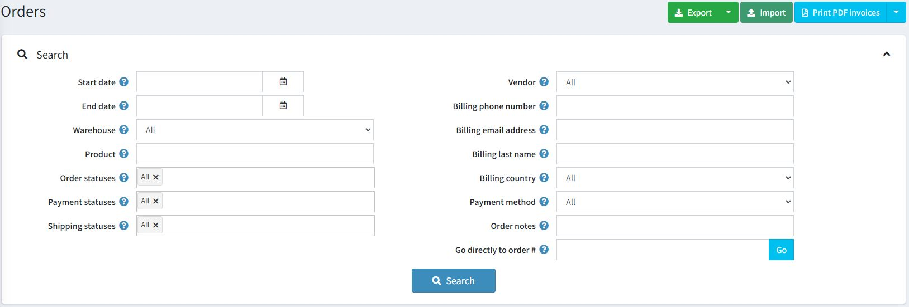
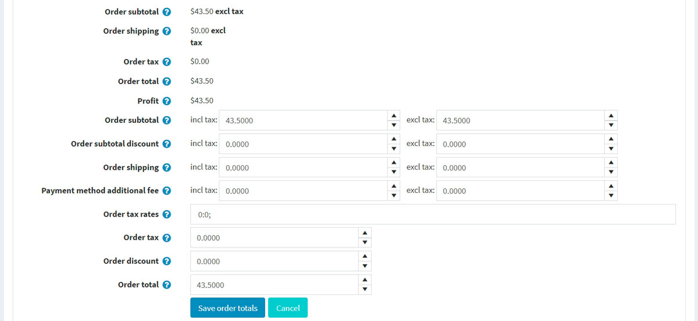
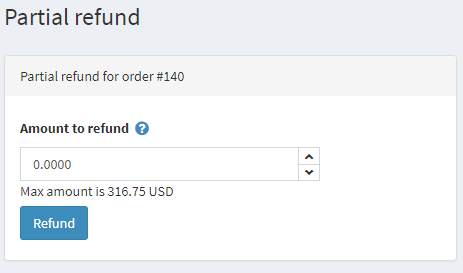
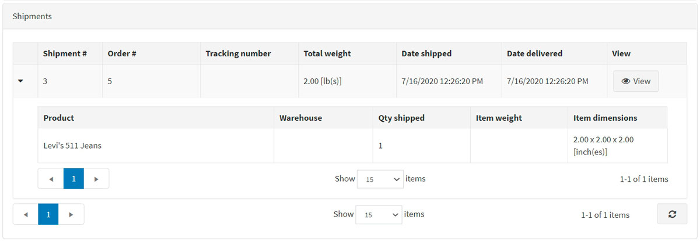
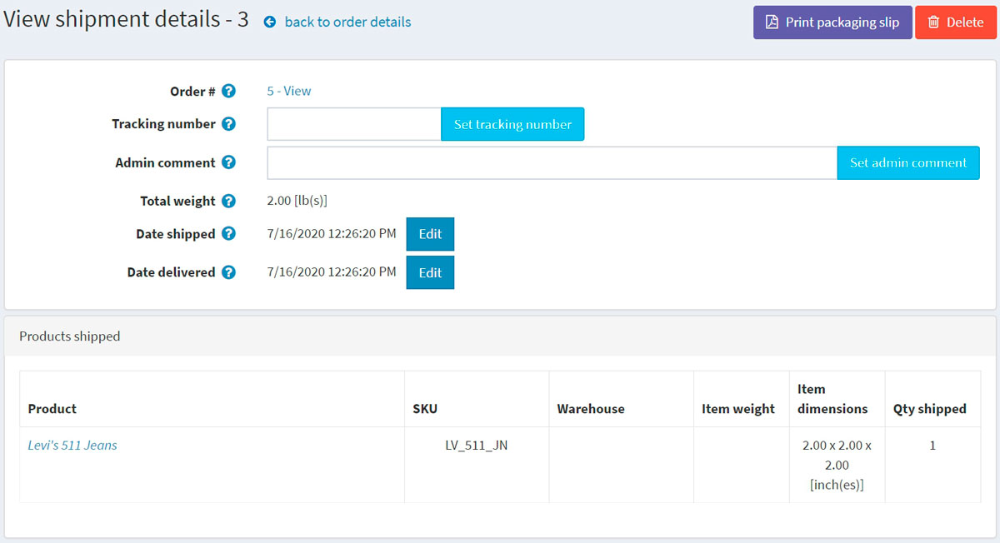
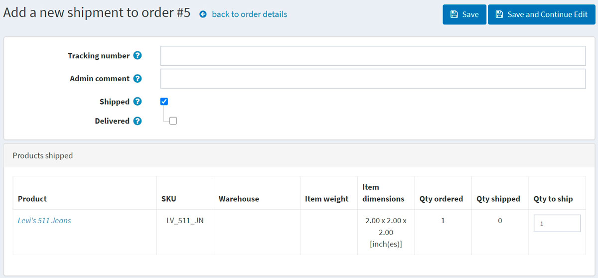
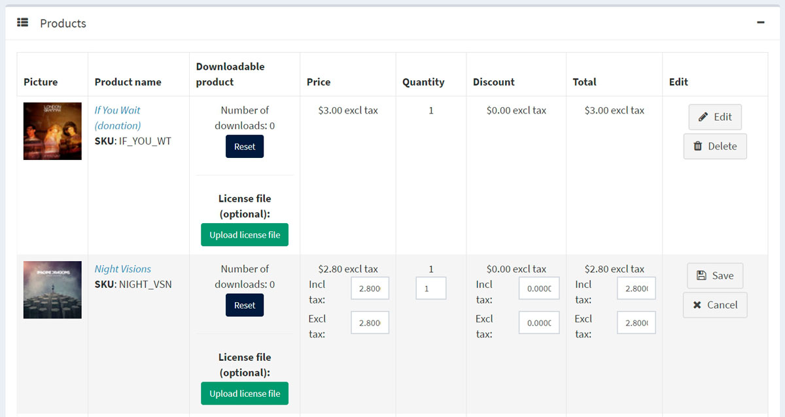
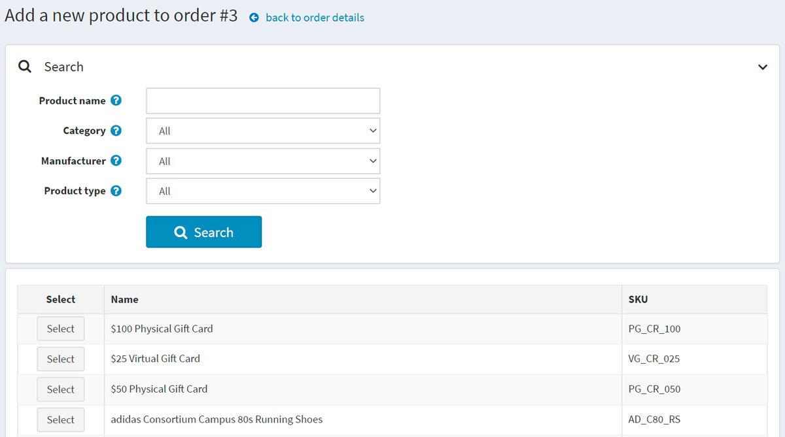
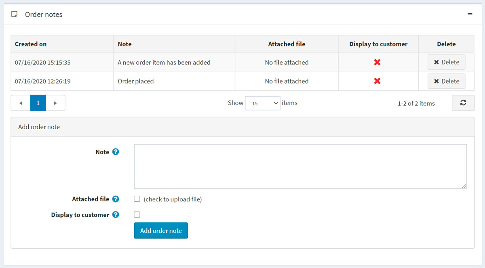

訂單
若要檢視與管理訂單，請前往 銷售 → 訂單。訂單頁面會列出所有目前的訂單。當顧客完成交易後，新的訂單就會出現在訂單頁面上。
頁面上方的區域讓商店擁有者可以搜尋訂單。輸入特定的搜尋條件並使用各種篩選器，即可找到商店中產生的任何訂單。每當完成搜尋時，搜尋結果將顯示在螢幕的下半部。您可以點擊 檢視 來查看訂單詳細資訊。

搜尋訂單
若要搜尋訂單，請輸入以下一項或多項搜尋條件：
- 開始日期 與 結束日期：定義訂單建立的期間。
- 倉庫：載入來自指定倉庫商品的訂單。
- 商品 — 輸入商品名稱。
- 訂單狀態 – 選擇下列其中一項：全部、待處理、處理中、已完成、已取消。
- 付款狀態 — 選擇特定的付款狀態進行搜尋：全部、待處理、已授權、已付款、部分退款、已退款、已作廢。
- 出貨狀態 — 選擇特定的出貨狀態進行搜尋：全部、無需出貨、尚未出貨、部分出貨、已出貨、已送達。
- 商店 — 設定訂單所屬的特定商店。
- 供應商 — 依特定的供應商進行搜尋。您將會看到包含該指定供應商商品的訂單。
- 帳單電話號碼 — 顧客的電話號碼。
- 帳單電子郵件地址 — 顧客的電子郵件地址。
- 帳單姓氏 — 顧客的姓氏。
- 帳單國家 — 顧客的國家。
- 付款方式 — 設定結帳時使用的特定付款方式。
- 訂單備註 — 在訂單備註中搜尋。留空則載入所有訂單。
- 直接前往訂單編號 # — 輸入訂單編號並點擊 前往 以顯示所需的訂單。
匯出訂單
您可以透過點擊頁面上方的 匯出 (Export) 按鈕，將訂單匯出至外部檔案。點擊 匯出 (Export) 按鈕後，您將會看到一個下拉式選單，讓您可以選擇 匯出為 XML (全部找到) 或 匯出為 XML (已選取)，以及 匯出為 Excel (全部找到) 或 匯出為 Excel (已選取)。
匯入訂單
您可以透過點擊 匯入、選擇檔案，並點擊 從 Excel 匯入 按鈕，從 Excel 匯入訂單。匯入的訂單會以訂單 GUID 作為識別依據。若訂單 GUID 已存在，則該訂單的詳細資訊將會被更新。
Warning
匯入作業需要大量的記憶體資源。因此，不建議一次匯入超過 500 到 1,000 筆記錄。若您有更多的記錄，建議將其拆分為多個 Excel 檔案並分開匯入。
訂單詳細資訊
若要檢視完整的訂單資訊，請點擊訂單清單中該訂單旁的 View。
點擊右上角的 Invoice (PDF) 按鈕，即可將訂單產生為 PDF 格式的發票。如果您想要刪除訂單，請點擊 Delete。
資訊
在 資訊 面板中，商店管理者可以執行下列操作：
- 檢視 訂單編號 (Order #)，這是唯一的訂單識別碼。
- 檢視 建立日期 (Created on) — 訂單下達或建立的日期與時間。
- 檢視下單的 顧客 (Customer)。
- 檢視 訂單狀態 (Order status)。僅當付款狀態設為 已付款 (Paid) 且出貨狀態設為 已送達 (Delivered) 時，訂單狀態才會顯示為 已完成 (Completed)。您可以點擊 變更狀態 (Change status) 按鈕手動變更訂單狀態。然而，僅建議進階使用者使用此選項，因為在這種情況下，所有相關動作（例如庫存調整、發送通知郵件、紅利點數、禮品卡啟用/停用）都必須手動完成。
- 取消訂單 (Cancel order)。系統會顯示確認訊息；點擊 是 (Yes) 可從系統中移除該訂單。
Note
當顧客使用「手動信用卡」付款方式（允許將信用卡資訊儲存於資料庫中）時，編輯信用卡 (Edit credit card) 按鈕才會顯示。若使用其他付款方式，此按鈕將不會顯示。
檢視 訂單小計 (Order subtotal)、訂單運費 (Order shipping)、訂單稅額 (Order tax)、訂單總額 (Order total) 及 利潤 (Profit)。如果您點擊 編輯訂單總額 (Edit order totals) 按鈕，將能夠如以下螢幕截圖所示編輯訂單總額：

檢視該訂單使用的 付款方式 (Payment method)。
檢視 付款狀態 (Payment status)。狀態可以是下列其中之一：待處理 (Pending)、已授權 (Authorized)、已付款 (已請款) (Paid (captured))、已退款 (Refunded)、已部分退款 (Partially refunded) 或 已作廢 (Voided)。
Note
並非所有付款閘道都支援上述所有狀態。請閱讀 付款方式 (Payment methods) 章節以了解更多關於付款方式的資訊。
如果付款狀態為 已授權 (Authorized)，將會顯示 作廢 (Void) 與 請款 (Capture) 訂單的相關按鈕。請款 (Capture) 用於從顧客端收取款項。作廢 (Void) 則用於取消尚未請款的訂單。
如果付款狀態為 待處理 (Pending)，管理者可以點擊 標記為已付款 (Mark as paid)，以表示該訂單已付款。
如果付款狀態為 已付款 (Paid)，則會顯示 退款 (Refund) 與 部分退款 (Partial refund) 按鈕。點擊 退款 (Refund) 後，將會顯示確認視窗。點擊 部分退款 (Partial refund) 按鈕後，將會顯示 部分退款 視窗。此視窗允許管理者依照下列方式退還訂單總額的一部分：

- 檢視此訂單下單所在的 商店 (Store)。
- 檢視供內部使用的 訂單 GUID (Order GUID)。
- 檢視顧客下單時使用的 顧客 IP 位址 (Customer IP address)。
帳單與配送
在 帳單與配送 面板中，您可以檢視並視需求編輯帳單與配送資訊。
- 檢視 帳單地址 與 配送地址。您可以選擇點擊 在 Google 地圖上檢視地址 連結，以定位所需的配送地址。點擊 編輯 按鈕即可編輯帳單或配送地址。
- 視需求檢視並編輯 配送方式。
- 檢視 配送狀態。
Note
商店擁有者可以為單一訂單建立多次出貨。如果您建立了一筆出貨單但未包含所有商品，該訂單的配送狀態將會顯示為 部分出貨。一旦所有商品皆已出貨，狀態將變更為 已出貨。當所有出貨皆已送達，狀態將變更為 已送達。
- 檢視 出貨清單。

點擊出貨項目旁的 檢視 即可查看詳細資訊。系統將會顯示出貨資訊視窗：
新增出貨 按鈕可讓您為單一訂單建立多筆出貨，當訂單中至少有一項商品尚未出貨時，此按鈕即會顯示。點擊 新增出貨 按鈕可為訂單新增一筆出貨，接著您會看到 新增出貨至訂單 視窗：

- 在 追蹤號碼 欄位中，輸入該筆出貨的追蹤號碼。追蹤號碼可讓您與顧客透過電話，或是由物流業者（郵局或私人快遞服務，例如 FedEx 或 UPS）經營的線上系統查詢配送進度。每當出貨在運送途中通過特定站點時，物流業者的系統會進行識別，並更新追蹤資料庫中的最新位置與時間資訊。
- 視需求填寫 管理員備註 欄位。
- 勾選 已出貨 核取方塊，以當前日期標記該筆出貨為「已出貨」。
- 若勾選上述核取方塊，已送達 核取方塊即會開放。勾選此核取方塊以當前日期標記該筆出貨為「已送達」。
- 在 已出貨商品 面板中：於 出貨數量 欄位，輸入該筆訂單項目中需要出貨的實際數量。
商品
在 商品 面板中，商店負責人可以：
- 檢視商品資訊，包含價格、數量及總價。
- 點擊 商品名稱 連結以檢視商品詳細資料頁面。若該商品為可下載商品，點擊 重設 (Reset) 以重設下載次數，或是點擊 上傳授權檔案 (Upload license file)。此外，當商品的 下載啟用類型 (Download activation type) 設為 手動 (Manually) 時，管理員可以選擇點擊 啟用 (Activate) 以允許從網站下載該商品，或點擊 停用 (Deactivate) 以禁止從網站下載該商品。
- 編輯 商品的 價格、數量、折扣 與 總計。
- 從系統中 刪除 商品。

- 點擊 新增商品 (Add product)。從清單中選擇商品。接著在 新增商品至訂單 (Add a new product to order) 視窗中，找到所需的商品。隨後填寫必要數值並點擊 新增商品 (Add product)。請記得在新增商品至訂單後，更新訂單總計。

訂單註記
在 訂單註記 面板中，商店管理員可以檢視為了資訊用途而加入到訂單中的註記、刪除註記，並新增新的註記。註記可以包含 附加檔案，並且可以設定為在公開商店中 顯示給顧客。
